Introduction
This is a website about Norway's economy, quite simply.
Norway is western Europe's largest petroleum producer, and the recent dramatic drop in oil prices has led to a period of economic realignment. This website is meant as as a source for data on this realignment in real time.
Suggestions and comments can be sent to my email address, johannes.mauritzen@bi.no.
data
Employment Data
Unemployment*, 1000s, by gender

Data Source: Statistics Norway
This measure does not include those that are not actively looking for work, including those on long term disability.
Employment, % of 25-74 year olds, by gender

Data source: Statistics Norway
What surprises me here is how little recovery there was in employment after the financial crisis. Norway never experienced a deep recession after 2008, but we never got back to the solid economic numbers we experienced prior to 2008 either. With starkly lower oil prices, employment is also starting to take
Housing
Home prices, index, 2005=100
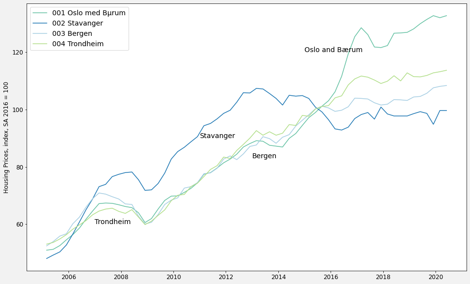Data source: Statistics Norway
House price index, 1819-2014, 1912 = 100
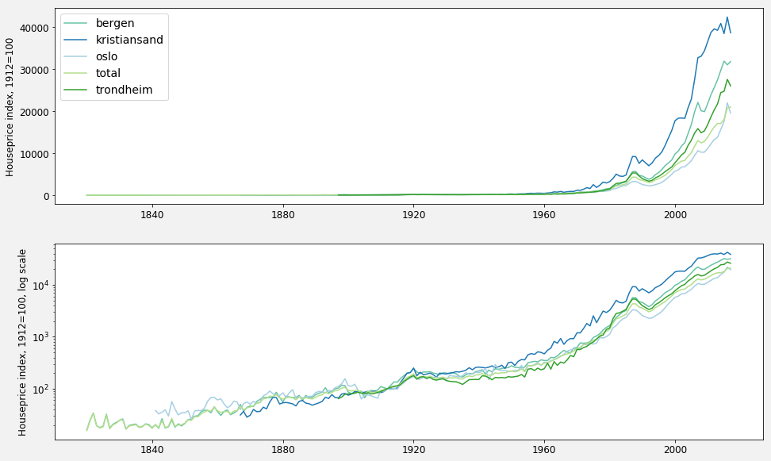Data source: Norges Bank
Data reference: Eitrheim, Ø. and S. Erlandsen (2004). "House price indices for Norway 1819-2003", 349-376, Chapter 9 in Eitrheim, Ø., J.T. Klovland and J.F. Qvigstad (eds.), Historical Monetary Statistics for Norway 1819-2003 Norges Bank Occasional Papers no. 35, Oslo, 2004.
This data gives a nice historical overview of the explosive growth in house prices in Norway - especially the last 20-30 years. The data is presented as an index set to 100 in 1912. On first look, the data might give a (false) impression that the most expensive real estate is in Kristiansand as opposed to the capital, Oslo. This is not the case. Instead, house price appreciation has been much higher in Kristiansand relative to what prices were in 1912. Oslo prices were already relatively pricey in 1912.
Building cost, growth % change, year-over-year

Data source: Statistics Norway
House price growth clearly outstrips the growth in building costs.
New housing starts, all Norway
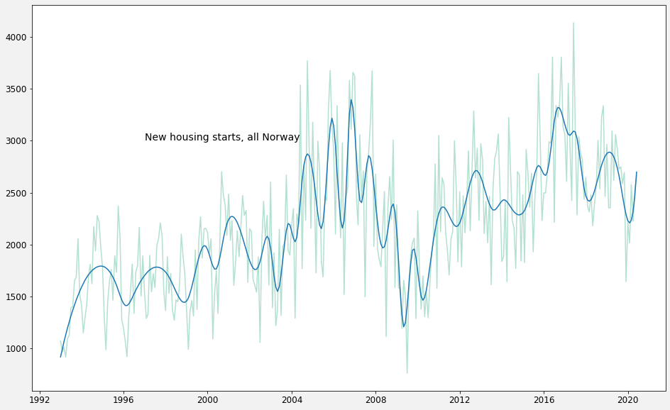Data source: Statistics Norway
New housing starts, by principality with major cities
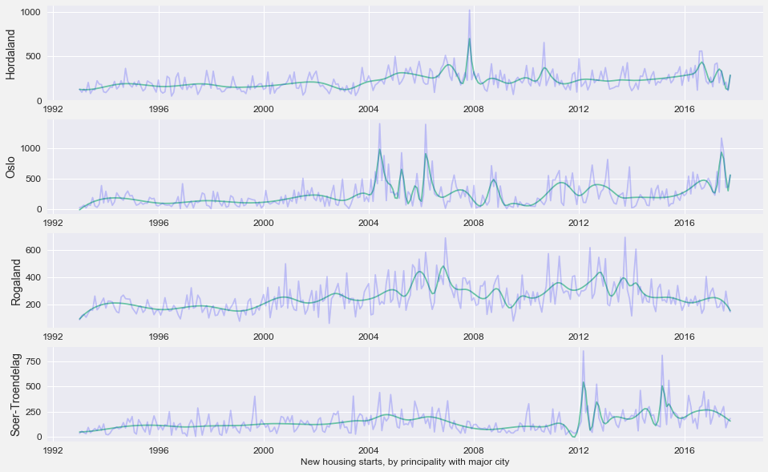Data source: Statistics Norway
Debt, Bankruptcies and Financial Indicators
Gross debt, by sector
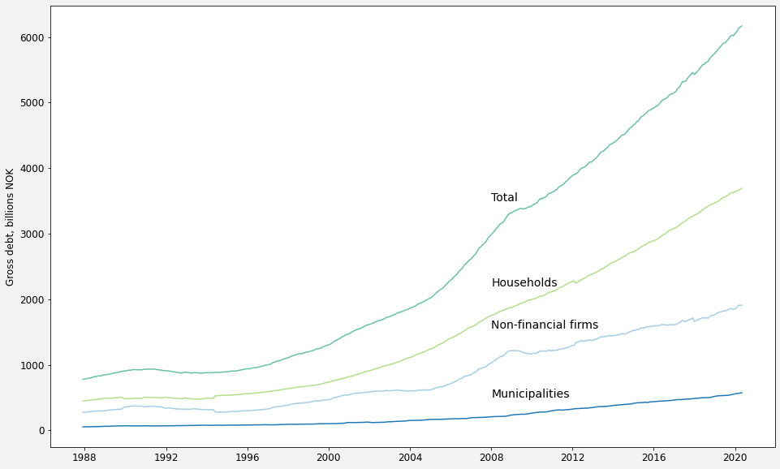Data source: Statistics Norway
Household debt, by source

Data source: Statistics Norway
Non-financial firm debt, by source
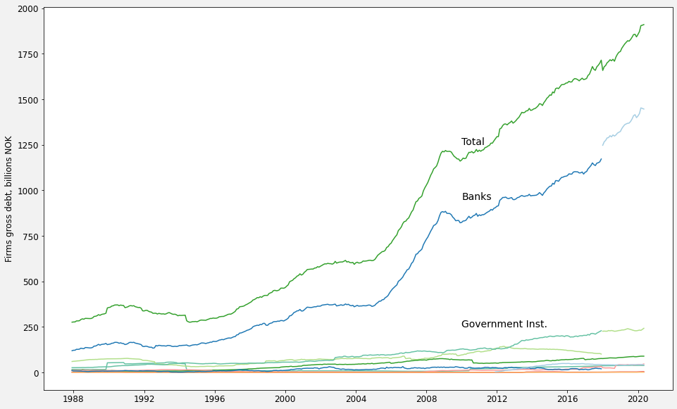Data source: Statistics Norway
Number of bankruptcies

Data source: Statistics Norway
Interest and inflation rates
Interest rates
Data source: Norges Bank
Historical short-term interest rates
Data Source: Norges Bank
Data reference: Eitrheim, Ø. and J. T. Klovland (2007). "Short term interest rates in Norway1818-2007", 1–108, Eitrheim, Ø., O. H. Grytten and J. T. Klovland (2007), "Historical Monetary Statistics for Norway – some cross checks of the new data", 385–434, Eitrheim, Ø., J.T. Klovland and J.F. Qvigstad (eds.), Historical Monetary Statistics for Norway – Part II, Norges Bank Occasional Papers No. 38, Oslo, 2007
Historical inflation rate
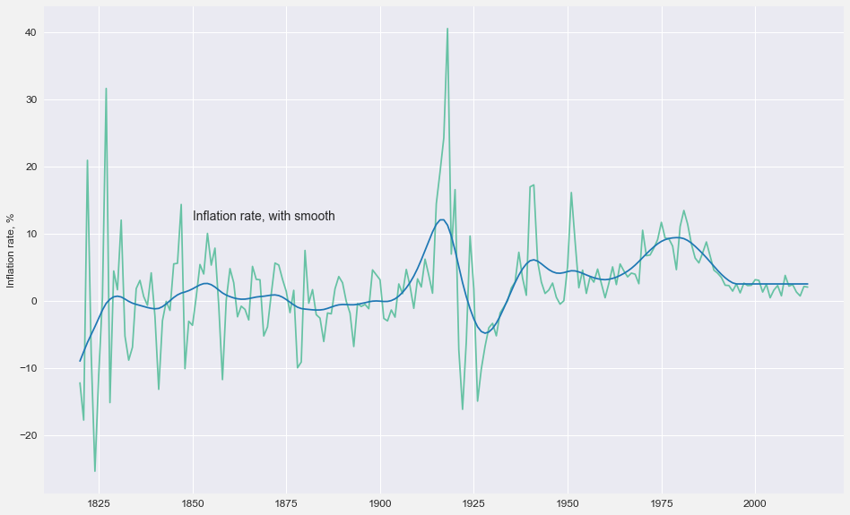Data Source: Norges Bank
Data reference: Eitrheim, Ø. and J. T. Klovland (2007). "Short term interest rates in Norway1818-2007", 1–108, Eitrheim, Ø., O. H. Grytten and J. T. Klovland (2007), "Historical Monetary Statistics for Norway – some cross checks of the new data", 385–434, Eitrheim, Ø., J.T. Klovland and J.F. Qvigstad (eds.), Historical Monetary Statistics for Norway – Part II, Norges Bank Occasional Papers No. 38, Oslo, 2007
Wages and Earnings
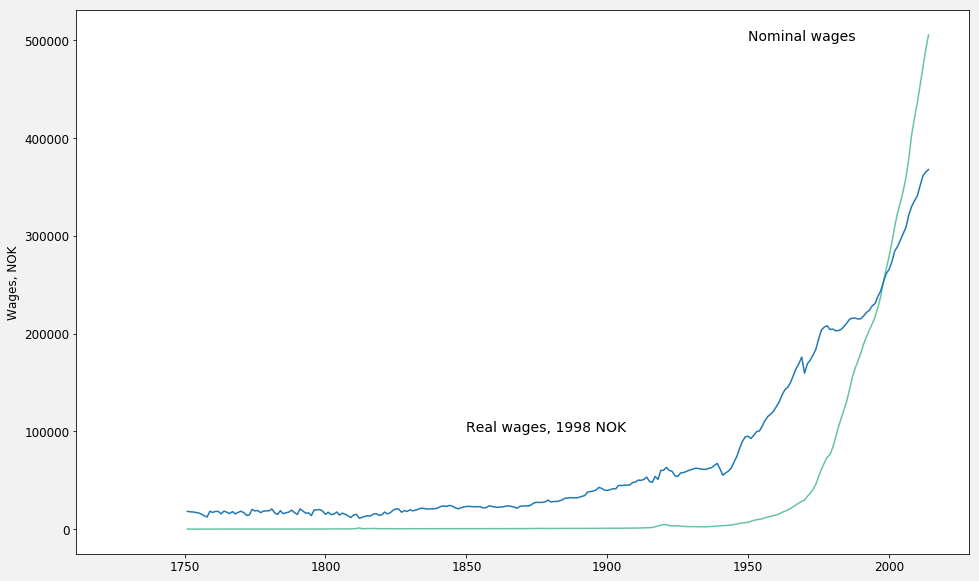Data source: Norges bank
Data reference: Grytten, Ola H. (2007), "Norwegian wages 1726–2006 classified by industry", 343–384, Chapter 6 in Eitrheim, Ø., J.T. Klovland and J.F. Qvigstad (eds.), Historical Monetary Statistics for Norway – Part II, Norges Bank Occasional Papers No. 38, Oslo, 2007
National Accounts
Gross Investment
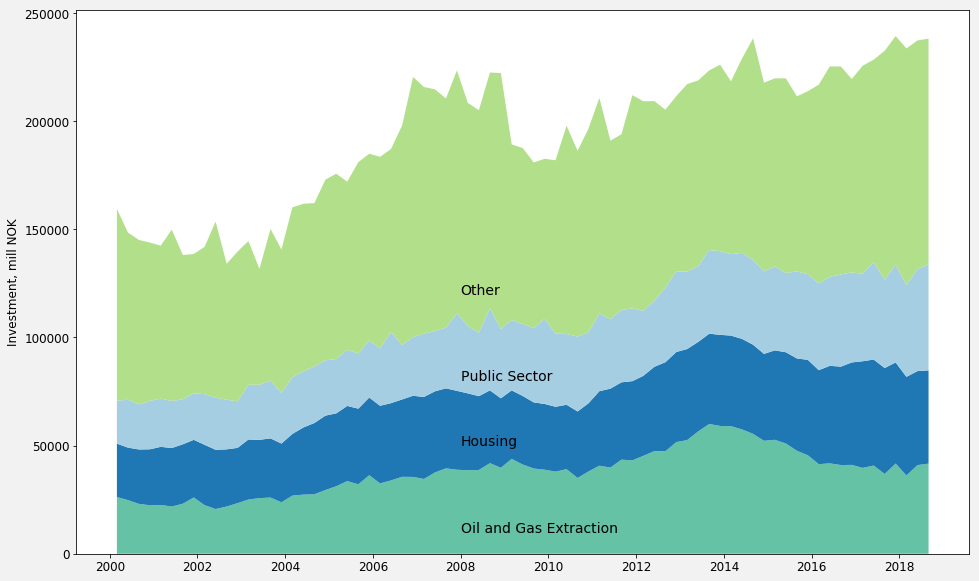Data sources: Statistics Norway
Exports
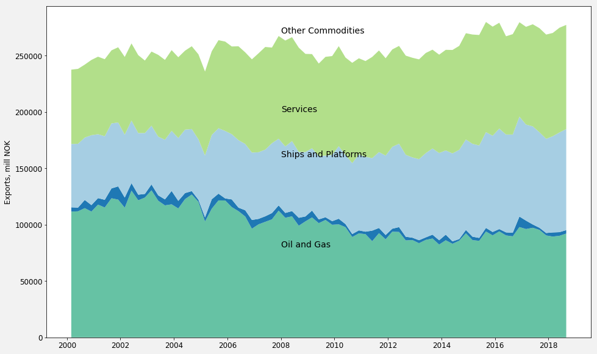Data sources: Statistics Norway
Imports
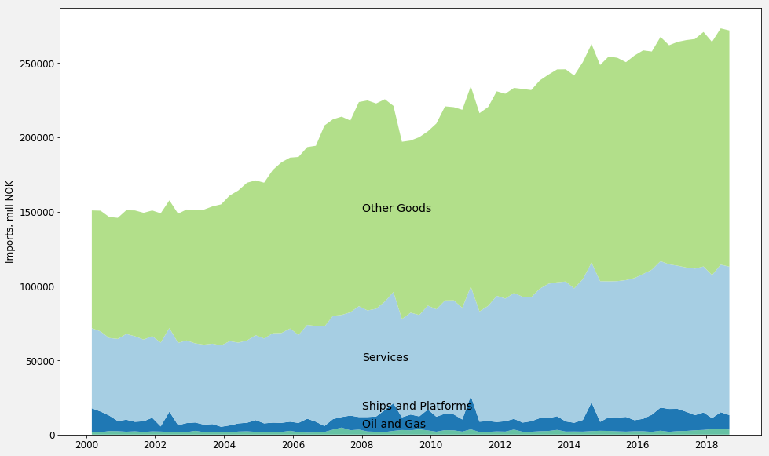Data sources: Statistics Norway
Household Consumption
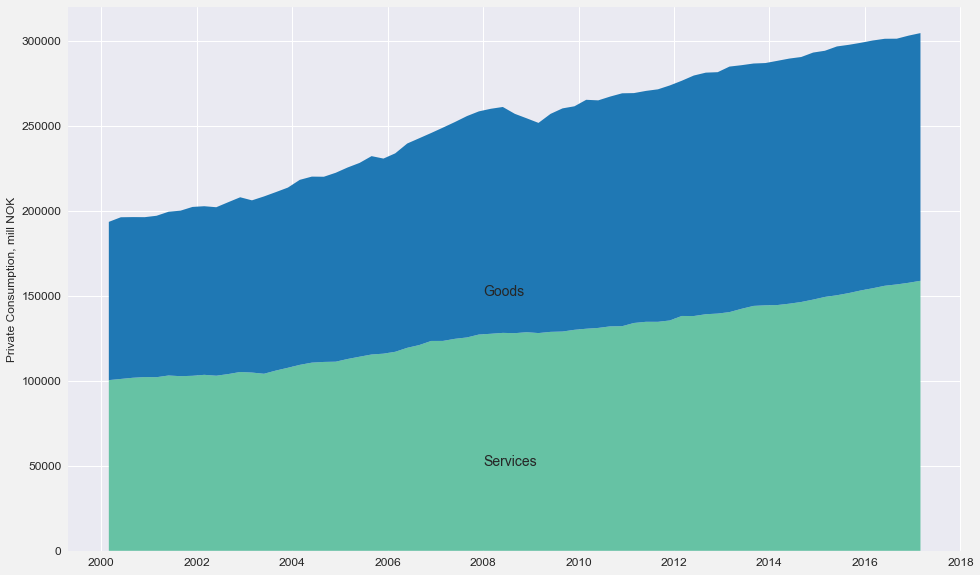Data sources: Statistics Norway
Public Sector Consumption
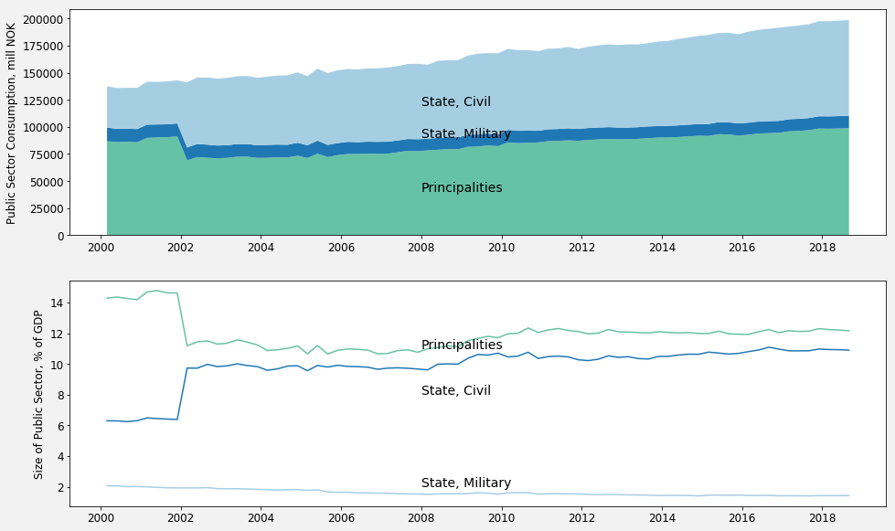Data sources: Statistics Norway
Demographics
Change in population by county, 2010 - 2015
Data sources: Statistics Norway, Norwegian Mapping Authority
Population, by age group
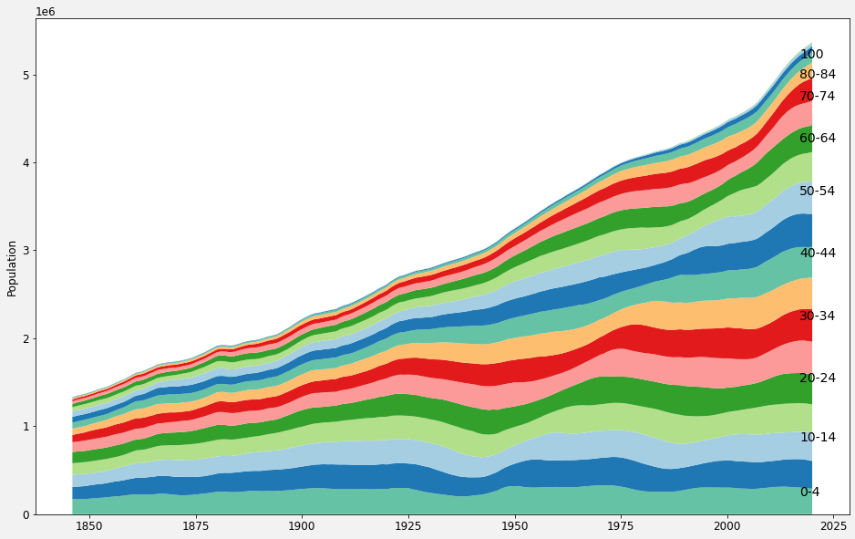Data source: Statistics Norway
Immigrant share of population, by origin
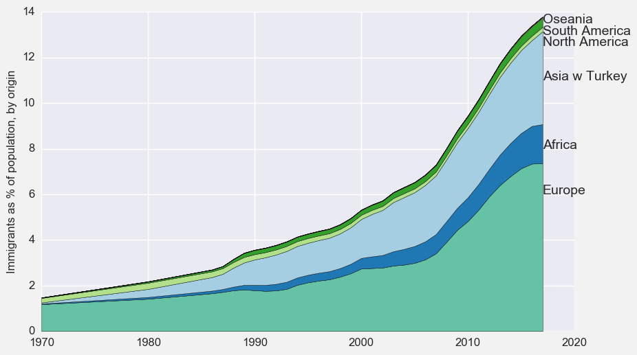Data source: Statistics Norway
Oil and Gas
Price of Brent Crude Oil

Data source: US Energy Information Agency
Oil and Gas production on the Norwegian Continental Shelf
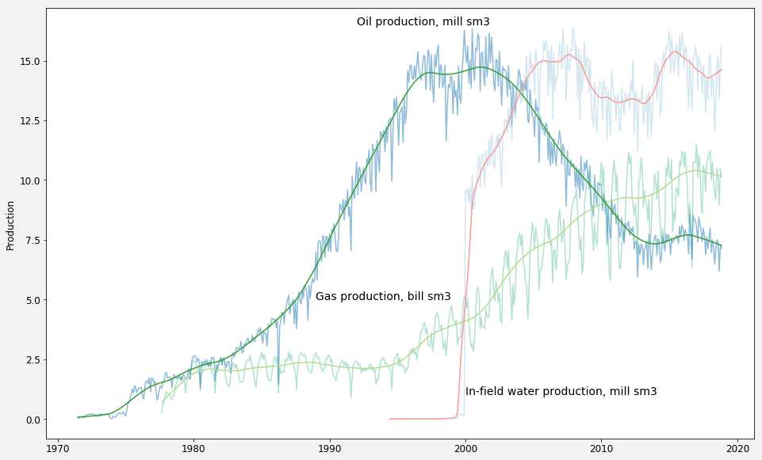Data source: Norwegian Petroleum Directorate
I include "production" of water here because it serves as an indicator of the age of fields and effort of getting out oil. Water injection is used to keep pressure up in the fields and lengthen their lifespans.
Investment in oil and gas fields
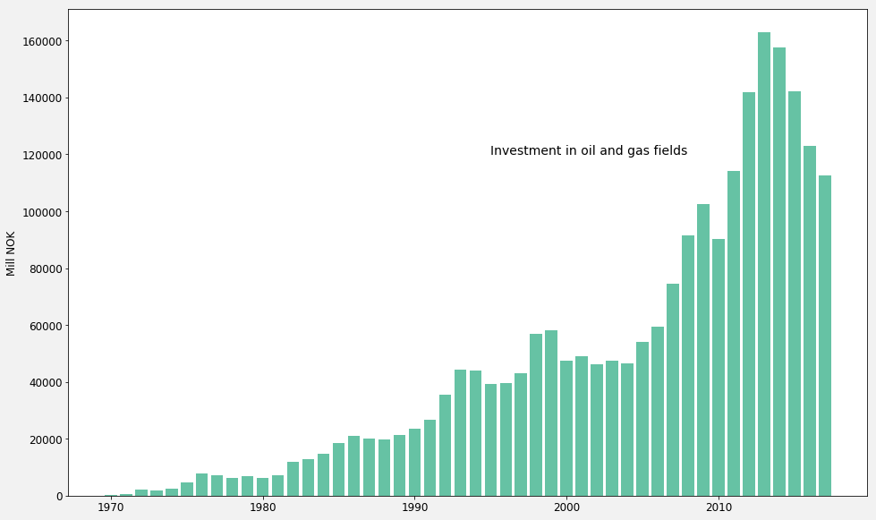Data source: Norwegian Petroleum Directorate
The fall in production has been halted the last couple years, but at the cost of huge investments. The last data point here is 2013.
about
Contact me by email, johannes.mauritzen@bi.no.
My personal website can be found here
If you want to see how I made the charts using python and matplotlib, see the ipython notebook.